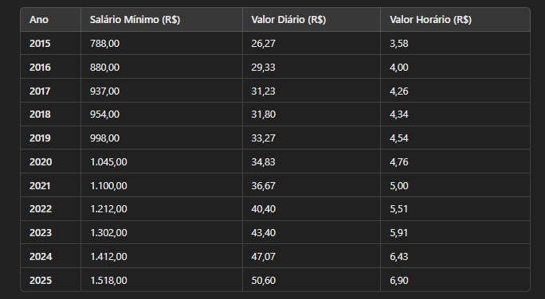

0:00 - 0:20 | Cargos (Pág. 45)
- O que são Cargos?
- Os cargos são as posições ou funções que os empregados ocupam dentro de uma organização,
definindo suas responsabilidades, atribuições e o nível hierárquico dentro da empresa.
- Exemplos de cargos incluem gerente, analista, assistente, supervisor, entre outros.
- Importância dos Cargos:
- A definição de cargos é fundamental para a estrutura organizacional da empresa, pois ela ajuda a
estabelecer as hierarquias e responsabilidades de cada colaborador.
- Além disso, define-se os salários, benefícios e a formação necessária para cada cargo.
- Classificação dos Cargos:
- Cargos de liderança: diretores, gerentes e supervisores.
- Cargos operacionais: analistas, assistentes e técnicos.
- Exemplos: Gerente de Vendas, Analista de TI, Diretor Financeiro, Coordenador de
Marketing.
- Implicações: O cargo geralmente está associado a um conjunto de responsabilidades e
autoridade dentro da organização. Ele pode refletir o nível hierárquico (ex: júnior, pleno, sênior)
e pode ter um impacto direto no salário, benefícios e outras condições de trabalho.
- Função:
- A função é a descrição geral do trabalho ou conjunto de atividades que a pessoa
realiza em seu cargo. Ela descreve o propósito e as responsabilidades do trabalho, sem entrar no
detalhe das tarefas específicas.
- Exemplo: A função de um "Gerente de Vendas" pode ser supervisionar e liderar a
equipe de vendas, desenvolver estratégias para aumentar as vendas e garantir que as metas sejam
cumpridas.
- Implicações: A função foca mais no objetivo do cargo e nas áreas de
responsabilidade. Em alguns casos, a função pode ser um agrupamento de tarefas que exigem
diferentes habilidades e competências.
- Tarefa:
- A tarefa refere-se a atividades específicas e concretas que o colaborador
realiza no seu dia a dia dentro de seu cargo e função. As tarefas são os passos ou ações
necessárias para cumprir a função ou atingir os objetivos do cargo.
- Exemplo: Para um "Analista de Marketing", uma tarefa pode ser "criar campanhas
publicitárias", "realizar análise de dados de performance", ou "elaborar relatórios de
desempenho de campanhas".
- Implicações: As tarefas podem variar muito dependendo da função e do cargo, e
são muitas vezes mais específicas e detalhadas. Elas são o que, de fato, o trabalhador faz na
prática para cumprir sua função.
- Salário:
- O salário é o pagamento que um colaborador recebe pelo desempenho de seu cargo
e funções. Ele pode ser fixo (mensal, semanal) ou variável (baseado em metas, comissões, bônus)
e é determinado com base em vários fatores, como o cargo, a experiência, a educação, a empresa e
a região geográfica.
- Exemplo: Um "Analista de TI" pode receber um salário fixo mensal de R$ 5.000,
enquanto um "Gerente de Vendas" pode ter um salário base de R$ 7.000, mais comissões sobre as
vendas.
- Implicações: O salário é um reflexo direto da qualificação exigida para o
cargo, a responsabilidade envolvida e o mercado de trabalho. Além do salário base, muitos cargos
podem ter benefícios adicionais como bônus, planos de saúde, vale-alimentação, entre outros.
- Relação entre Cargo, Função, Tarefa e Salário:
- O cargo é o nome da posição e determina em linhas gerais o que se espera da
pessoa no trabalho.
- A função é o conjunto de responsabilidades associadas a esse cargo.
- As tarefas são as atividades concretas que o colaborador realiza para cumprir
sua função.
- O salário é a remuneração que é paga ao colaborador em troca do seu trabalho no
cargo, sendo influenciado pela função que ele desempenha e pelas tarefas que executa.
- A estrutura salarial também pode variar com o tempo ou conforme o desempenho do colaborador,
assim como em função do aumento de responsabilidades ao longo de sua carreira. Além disso, em
alguns cargos, o salário pode incluir benefícios adicionais que impactam o total de remuneração.
0:20 - 0:40 | Salário Mínimo e Equiparação Salarial (Pág. 47)
- Salário Mínimo:
- É o valor estabelecido por lei que deve ser pago a um trabalhador para uma jornada de
trabalho completa, visando garantir uma remuneração mínima para a subsistência do
trabalhador e sua família. O salário mínimo é determinado por cada país ou região, levando
em consideração fatores econômicos, como a inflação, o custo de vida e as necessidades
básicas dos trabalhadores.
- Características:
- Estabelecimento Legal: O salário mínimo é determinado por leis ou decretos
governamentais. No Brasil, por exemplo, é fixado anualmente pelo Governo Federal e
varia de acordo com o ano e a região do país.
- Objetivo: O principal objetivo do salário mínimo é garantir uma renda
básica para os trabalhadores, que assegure sua sobrevivência e a de sua família,
cobrindo necessidades como alimentação, moradia, saúde, transporte, entre outros.
- Periodicidade de Pagamento: O pagamento do salário mínimo é, em geral,
feito mensalmente, embora o trabalhador possa ser pago semanalmente, dependendo do
acordo ou da empresa.
- Reajuste: O valor do salário mínimo costuma ser reajustado periodicamente
(geralmente uma vez por ano), considerando fatores como a inflação e a evolução da
economia, para manter o poder de compra dos trabalhadores.
- Variações Regionais: Em alguns países, como o Brasil, o salário mínimo pode
ter valores diferentes conforme a região ou o estado, para refletir as diferenças no
custo de vida em áreas mais urbanizadas ou mais remotas.

- Equiparação Salarial:
- É o princípio que visa garantir que trabalhadores que desempenham a mesma função ou
atividades de igual valor recebam o mesmo salário, independentemente de suas características
pessoais, como sexo, idade, etnia, etc. Este princípio é importante para evitar
discriminação e promover a igualdade de oportunidades dentro das empresas.
- Conceito:
- A equiparação salarial busca corrigir distorções e garantir que as remunerações
sejam justas e baseadas em critérios objetivos, como o trabalho desempenhado e a
experiência do trabalhador. Quando dois ou mais trabalhadores realizam a mesma
função com a mesma eficiência, deve-se garantir que todos recebam o mesmo valor.
- Aspectos Importantes:
- Mesma Função ou Atividades de Igual Valor: Para que ocorra a equiparação
salarial, é necessário que os trabalhadores desempenhem a mesma função ou atividades
de igual valor. Ou seja, eles devem ter as mesmas responsabilidades, exigir as
mesmas competências e habilidades, e as tarefas executadas devem ser idênticas ou
equivalentes em termos de importância para a empresa.
- Tempo de Serviço: A equiparação não depende do tempo de serviço de cada
trabalhador na empresa, desde que as condições de trabalho sejam semelhantes. Ou
seja, um trabalhador mais recente pode ter direito a receber o mesmo salário que um
trabalhador mais antigo, se as funções realizadas forem iguais.
- Proibição de Discriminação: A equiparação salarial também visa evitar
discriminação salarial entre homens e mulheres, ou entre trabalhadores de diferentes
etnias ou idades, quando as funções exercidas são equivalentes. Por exemplo, uma
mulher que executa a mesma função que um homem, com a mesma carga de trabalho e
qualificação, deve receber o mesmo salário.
- Diferenças Justificáveis: Existem algumas situações em que a diferença
salarial pode ser justificada, como em caso de maior qualificação ou experiência do
trabalhador, responsabilidades adicionais, turnos de trabalho diferenciados, entre
outros fatores.
- Exemplo: Se dois funcionários, um com 5 anos de empresa e outro
com 1 ano, executam as mesmas tarefas no mesmo cargo e com as mesmas responsabilidades, a
equiparação salarial garante que ambos recebam o mesmo salário, desde que as funções sejam
idênticas. Isso visa evitar injustiças salariais com base em tempo de serviço ou outros
fatores não relacionados ao trabalho.
- Equiparação Salarial no Brasil: No Brasil, a Consolidação das Leis
do Trabalho (CLT) garante o direito à equiparação salarial entre empregados que
executam a mesma função. O artigo 461 da CLT estabelece que, para a equiparação salarial,
devem ser observados os seguintes requisitos:
- Mesma função ou atividade de igual valor.
- Tempo de serviço superior a 2 anos (no mesmo empregador, salvo se houver
algum fator impeditivo).
- Diferença de tempo ou eficiência não pode justificar a disparidade
salarial.
- Diferenças Entre Salário Mínimo e Equiparação Salarial:
- Salário Mínimo é o valor mínimo que um trabalhador pode receber, independentemente
das funções ou da natureza do trabalho. Ele garante um piso de remuneração para os
trabalhadores.
- Equiparação Salarial é uma prática que visa garantir que trabalhadores que realizam
funções idênticas recebam o mesmo salário, sem discriminação ou favorecimento, promovendo a
justiça e a igualdade nas relações de trabalho.
- Conclusão:
- O salário mínimo garante que o trabalhador receba uma remuneração básica para a sua
sobrevivência, independentemente do cargo ou setor.
- A equiparação salarial busca assegurar que trabalhadores que realizam o mesmo
trabalho recebam o mesmo salário, sem discriminação ou favorecimento, promovendo a justiça e
a igualdade nas relações de trabalho.
- Atividade:
0:40 - 1:00 | Benefícios: Vale Transporte (VT) Vale Refeição e Alimentação (VR e VA) (Pág.
59)
- Vale Alimentação (VA):
- O vale alimentação é um benefício oferecido pelas empresas para garantir que o empregado tenha
um auxílio para suas refeições durante o expediente.
- Este benefício não é obrigatório por lei, mas é uma prática comum em muitas empresas.
- Vale Transporte (VT):
- O vale transporte é um benefício que visa cobrir os custos do empregado com transporte para o
deslocamento entre sua casa e o trabalho.
- É obrigatório por lei para empresas que contratam empregados urbanos, e o valor do benefício é
descontado em até 6% do salário do empregado.
- Vale Refeição (VR):
- O vale refeição é um benefício concedido aos empregados para subsidiar suas refeições durante o
expediente de trabalho, e é fornecido por meio de cartão ou vale físico.
- O benefício é um auxílio importante, principalmente para empresas localizadas em regiões onde a
alimentação é cara.
1:00 - 1:20 | Assistência Médica, Prêmios e Gratificações (Pág. 60)
- Assistência Médica:
- Objetivo: Garantir que os trabalhadores e seus dependentes tenham acesso a serviços
médicos de qualidade, como consultas, exames, internações e tratamentos.
- Forma de Plano:
- Plano de Saúde Coletivo: Oferecido pela empresa com custos mais acessíveis do
que planos individuais.
- Cobertura Parcial ou Integral: A empresa pode custear total ou parcialmente o
valor do plano de saúde.
- Benefícios para o Trabalhador:
- Acesso a Cuidados Médicos: Facilidade de acesso a consultas e procedimentos
médicos.
- Segurança e Tranquilidade: Garantia de cuidados com a saúde do trabalhador e
sua família.
- Benefícios para a Empresa:
- Valorização do Colaborador: Aumenta a satisfação e a lealdade dos empregados.
- Redução de Ausências: Funcionários mais saudáveis tendem a faltar menos ao
trabalho.
- Prêmios:
- Tipos de Prêmios:
- Prêmios em Dinheiro: Bônus financeiros oferecidos como reconhecimento de
desempenho.
- Prêmios Não Monetários: Viagens, produtos eletrônicos, carros, entre outros.
- Critérios de Concessão: Condicionado ao cumprimento de metas de vendas,
produtividade ou outros critérios de desempenho.
- Objetivo:
- Motivação: Incentivar os colaboradores a se destacarem em suas funções e
aumentarem a produtividade.
- Reconhecimento: Reconhecer publicamente os esforços dos trabalhadores.
- Exemplos de Prêmios:
- Funcionário do Mês: Reconhecimento mensal do melhor colaborador, com prêmio
financeiro ou simbólico.
- Prêmios por Metas: Bônus pagos ao atingir objetivos de vendas ou produtividade.
- Benefícios para a Empresa:
- Aumento de Produtividade: Estimula os colaboradores a atingir as metas
estabelecidas.
- Retenção de Talentos: Funcionários reconhecidos são mais propensos a permanecer
na empresa.
- Benefícios para o Trabalhador:
- Valorização Profissional: O prêmio funciona como um reconhecimento do esforço
do colaborador.
- Incentivo ao Crescimento: Prêmios estimulam os trabalhadores a melhorar seu
desempenho constantemente.
- Gratificações:
- Gratificação de Natal (13º Salário): Pagamento adicional realizado no final do ano,
equivalente a 1/12 do salário anual.
- Gratificação de Função: Gratificação adicional por exercer funções especiais ou
responsabilidades extras.
- Gratificação por Desempenho: Recompensas financeiras baseadas no desempenho individual
ou da equipe.
- Periodicidade:
- Mensal: Pagamento regular de gratificações como bônus mensais.
- Esporádica: Gratificações concedidas de forma pontual, como em momentos
especiais ou realizações extraordinárias.
- Objetivo:
- Motivar o Colaborador: Estimular o bom desempenho e a dedicação.
- Recompensa pelo Esforço: Reconhecer o trabalho além do esperado, premiando o
empenho extra do trabalhador.
- Benefícios para o Trabalhador:
- Renda Extra: As gratificações funcionam como uma forma de aumentar a
remuneração do trabalhador.
- Reconhecimento: As gratificações ajudam a aumentar a satisfação e a motivação
do trabalhador, tornando-o mais engajado no trabalho.
- Benefícios para a Empresa:
- Aumento de Desempenho: Gratificações são um estímulo para melhorar a
produtividade e alcançar metas.
- Fidelização: Gratificações podem criar um vínculo mais forte entre o
colaborador e a empresa, aumentando a retenção.
1:20 - 1:40 | Diferença entre Prêmios e Gratificações
- Diferença entre Prêmios e Gratificações (CLT):
- Prêmios:
- Conceito: Os prêmios são valores concedidos ao trabalhador como
reconhecimento de sua performance ou de um feito extraordinário, geralmente ligados
ao atingimento de metas específicas ou desempenho superior.
- Natureza: Não são considerados como parte do salário regular, ou seja, não
integram a remuneração do empregado para fins de cálculos de FGTS, férias, 13º
salário e outros direitos trabalhistas.
- Periodicidade: Os prêmios são concedidos de forma esporádica, ou seja, não
são pagos mensalmente e estão atrelados a metas ou feitos específicos.
- Exemplo: Um trabalhador que alcança uma meta de vendas pode receber um
prêmio em dinheiro ou em bens, como um carro ou uma viagem.
- Implicações Fiscais: Os prêmios são isentos de encargos trabalhistas e
contribuições sociais, como INSS e FGTS, desde que sejam esporádicos e não integrem
a remuneração habitual.
- Gratificações:
- Conceito: As gratificações são valores adicionais pagos ao trabalhador como
forma de reconhecimento ou recompensa, geralmente para compensar o exercício de
funções especiais ou o desempenho acima do esperado.
- Natureza: As gratificações podem ser de caráter fixo ou variável, mas se
forem pagas de forma regular, podem ser incorporadas ao salário do trabalhador,
tornando-se parte da remuneração para cálculos de férias, 13º salário, FGTS, entre
outros direitos trabalhistas.
- Periodicidade: As gratificações podem ser pagas de forma mensal, anual ou
esporádica, dependendo da política da empresa ou do que foi acordado em contrato de
trabalho.
- Exemplo: Um trabalhador que ocupa um cargo de responsabilidade especial,
como um gerente, pode receber uma gratificação mensal como reconhecimento pelo
cargo.
- Implicações Fiscais: Se as gratificações forem pagas de forma regular, elas
são integradas ao salário do trabalhador, sendo sujeitas ao pagamento de encargos
trabalhistas, como INSS, FGTS e Imposto de Renda.
- Principais Diferenças:
- Periodicidade: Os prêmios são esporádicos e condicionados a metas ou
desempenho extraordinário, enquanto as gratificações podem ser pagas de forma
regular e, em alguns casos, integradas ao salário.
- Integração ao Salário: Prêmios não integram o salário do trabalhador, mas
gratificações podem ser incorporadas à remuneração regular, dependendo da sua
natureza e periodicidade.
- Encargos Trabalhistas: Os prêmios, quando esporádicos, são isentos de
encargos trabalhistas, enquanto as gratificações, quando regulares, estão sujeitas a
tributos e encargos.
- Objetivo: Prêmios visam reconhecer conquistas específicas, enquanto
gratificações podem ser uma forma de compensar funções especiais ou desempenhos
contínuos.
- Cesta Básica:
- A cesta básica é um benefício concedido por algumas empresas para ajudar no custeio das despesas
com alimentos essenciais do trabalhador.
- Embora não seja obrigatório por lei, é um benefício de grande valia para os empregados e uma
prática adotada por diversas empresas.
- Comissão:
- A comissão é um benefício variável, onde o empregado recebe uma porcentagem sobre as vendas ou
negócios fechados por ele.
- Esse benefício é comum em cargos comerciais e de vendas, motivando o aumento da produtividade e
a geração de resultados.
- Bônus:
- Os bônus são pagamentos extras que podem ser dados ao empregado como reconhecimento por
desempenho excepcional ou cumprimento de metas.
- Prática:
- Os alunos irão simular o cálculo de uma comissão e um bônus com base em metas alcançadas e
valores de vendas realizadas por um vendedor fictício.
1:40 - 2:00 | Revisão e Discussão
- Revisão:
- Revisão de todos os tópicos abordados, com foco na importância da folha de registro, cargos e
benefícios.
- Discussão sobre as práticas realizadas pelos alunos e resolução de dúvidas sobre os cálculos de
benefícios.
- Discussão de Casos:
- Os alunos serão convidados a compartilhar exemplos reais ou fictícios de situações de benefícios
na empresa e como lidaram com eles.